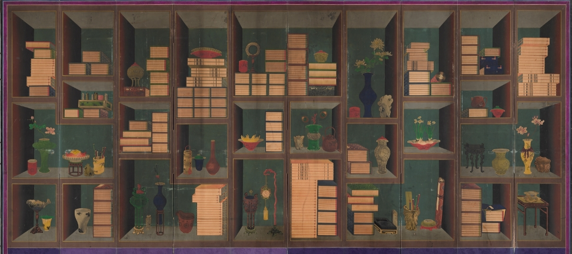
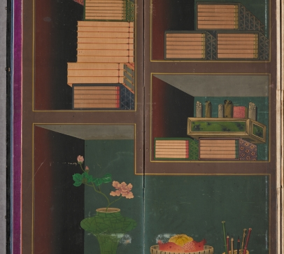
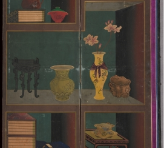
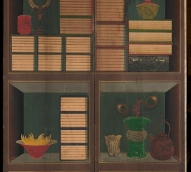
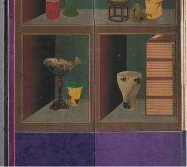

조선시대 책가도
"책을 사랑하는 마음을 담다."
책꽂이를 통째로 옮겨 그린 듯한 책가도(冊架圖)는 책을 비롯하여 당시의 여러 귀중품들을 함께 그린 그림을 말하며, 우리말로는 책거리라고도 합니다. 책꽂이 형태를 8폭, 10폭의 병풍에 그린 후 그 안에 책과 기물이 가지런히 쌓여 있는 모습으로 그린 책가도와, 책꽂이는 생략하고 화면 위아래로 책과 물건만 나열하여 그린 책가도로 구별됩니다. 책가도는 당시로서는 서양화에서나 볼 수 있던 ‘투시도법’과 ‘명암법’을 응용해서 그려 조선 전통적 화법으로 그려진 그림에 비해 공간감과 입체감이 훨씬 살아 있습니다. 서민들의 풍속을 즐겨 그린 김홍도(金弘道)가 책가도를 잘 그렸다고 하며, 이윤민(李潤民)·이형록(李亨祿) 부자(父子)같은 화원도 책가도로 유명하였습니다.
책을 사랑했던 왕, 정조
그렇다면 책가도는 왜 그렸을까요? 조선시대에는 책을 매우 중요하게 여겼고 책에 대한 관심도 높았습니다. 과거에 급제하고 출세하기 위해서는 책을 많이 읽어야 했고, 책을 읽어 쌓이는 문인으로서의 소양은 조선시대 선비 문화 전반에 깔려 있었습니다. 그래서 신선도, 풍속화 등 다른 회화 장르에서도 책 읽는 모습을 종종 볼 수 있습니다. 책가도는 책을 사랑하는 우리 문화를 대변하는 그림입니다.
- 
- 이형록, <책가도>, 조선 19세기, 비단에 색, 153.0×352.0cm, 덕수6004
특히 궁중화원이 그린 책가도가 많다는 것은 왕실에서도 그 쓰임새가 많았던 것을 의미합니다. 일찍이 정조는 어좌 뒤에 일월오봉도 대신 책가도를 배치하였다고 하며 “책을 즐겨 읽지만 일이 많아 책을 볼 시간이 없을 때는 책가도를 보며 마음을 푼다.”라고 스스로 밝힌 바 있습니다. 이 같은 책 사랑은 조선 왕실에서 서민에 이르기까지 한결같았습니다.
이것은 병인양요(1866년) 때 프랑스 해군 장교 주베르가 한 말인데, 이 글을 보면 조선이라는 나라가 얼마나 책을 소중히 여겼는지 알 수 있으며, 그만큼 책과 관련된 생활 문화가 뿌리 깊다는 것도 알 수 있습니다. 그 결과, 궁중에서부터 민간에까지 광범위한 계층에서 모두 사랑받는 그림, 책가도가 유행하게 되었습니다.
- 화가는 자신의 이름을 숨겨놓았다.
- 대부분의 궁중회화와 민화에는 화가의 낙관이 없어 누가 그린 것인지 알 수 없습니다. 그런데 책가도 중에는 여러 물건 가운데 인장을 그려 넣으면서 인면(印面)이 보이도록 눕혀 표현한 경우가 있습니다. 도장을 그리는 것이 목적이었다면 굳이 눕혀서 그릴 필요가 없었을 텐데, 도장함과 여러 개의 도장을 그릴 때에도 도장 하나는 찍히는 면인 인면이 보이게 그렸습니다. 이를 숨겨진 도장, 즉 “은인(隱印)”이라고 합니다. 화가는 자신의 이름을 후세에 남기고 싶었던 것일까요? 다른 그림 어디에서도 볼 수 없는 책가도만의 흥미롭고 재치 있는 관습을 확인할 수 있습니다. 궁중화원이었던 이형록(1808~1883 이후)은 책가도 병풍 제9폭에 자신의 이름을 새긴 도장을 그려 넣었습니다. 그래서 애초에 작가미상으로 알려졌다가 숨은 도장을 통해 화가가 이형록이라는 것이 알려지게 되었습니다.
- 
제9폭 도장 부분
- 
- 
- 
- 진귀한 보물을 내 방 안에
- 책가도 속에 숨겨진 또 다른 재미는 ‘상징성’입니다. 이 정도 규모의 책과 물건을 가진 선비라면, 학식은 기본이고 세상 부러울 게 없이 모든 걸 가진 사람일 겁니다. 선비들의 필수품인 벼루나 붓 등도 있지만, 그 외 그림 속에 등장하는 여러 물건에는 사람이 일평생 살아가면서 가져보는 순수한 바람이 숨어 있습니다. 중국에서는 과거 시험에 합격한 선비에게 살구꽃 아래에서 향연을 베풀어줬다는 기록이 있어, 제1폭에 그려진 살구꽃은 과거 급제와 입신양명을 상징합니다. 수선화의 ‘선’에는 신선 선(仙) 자를 써서 신선처럼 살기를 바라는 마음을 담았습니다. 공작 깃털도 책가도의 단골 소재입니다. 공작은 문금(文禽)이라 불리며 문인의 관복 흉배에 새겨졌던 소재로, 문인으로서 높은 관직에 오르는 것을 상징합니다. 시계 또한 실제로 보기 어려운 귀한 물건이었습니다. 자명종 시계가 우리나라에 들어온 것은 17세기라고 알려져 있지만, 19세기에도 실생활에서 보기 어려운 물건이었습니다. 석류는 씨가 많아 다산(多産)과 자손 번창을 기원하는 의미를 가집니다. 제10폭에 등장하는 잉어는 용으로 변하는 ‘어변성룡(漁變成龍)’의 고사(故事)를 바탕으로 부귀와 출세를 기원하는 상징성이 있습니다.
- 두 번째 재미는 책을 아슬아슬하게 쌓아서 보는 이로 하여금 시각적인 긴장감을 갖게 한다는 점입니다. 책들은 화면에서 위로 올라갈수록 아랫면이 보이고 아래로 배치될수록 윗면이 보이는 등, 책 표현에 일점투시도법에 가까운 원근법을 적용하였습니다. 그러나 여기에 그치지 않고, 책을 지그재그로 배치하여 단조로운 구성을 피하고자 하였습니다. 책가 옆면의 갈색을 뒤로 갈수록 진하게 표현하여 책과 기물을 넣은 사각형 공간에 공간감을 주었습니다.
- 무엇보다 이 책가도는 진한 녹색 바탕과 갈색 테두리, 연녹색 상판 등 고급스러운 바탕색이 일품입니다. 금선을 두른 고풍스러운 바탕색이 화려한 색감의 기물들과 잘 어우러져, 현존하는 책가도 가운데 가장 수준 높은 기량과 뛰어난 미적 감각을 보여줍니다.